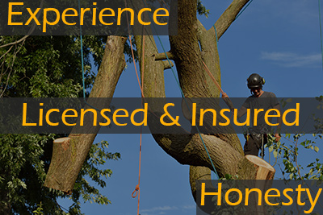

Selecting the right company to provide any service for you or your home is an important decision. When you are searching through tree companies in Barnegat, there are certain qualities and features to keep an eye out for. While neglecting care for your trees altogether is the worst-case scenario, hiring the wrong company to provide that care is almost as bad. Trimming, pruning, and delimbing are more than just cutting branches off haphazardly. It takes precise planning and thought. When done wrong, tree care can actually harm a tree. Furthermore, safety is a great concern when it comes to tree service. This means that not only are experience and knowledge are important, proper licensing and insurance are equally as important.Tree Companies in Barnegat Need Experience
This may seem like something that shouldn’t need to be said. Hiring a company with no experience in any industry is usually not a good idea. However, when it comes to tree care, there is no replacement for experience. No two jobs are ever the same. Whether it is limited access to the project area or proximity to residences where tree removal is necessary, every assignment has some type of hurdle or difficult spot. Making the wrong decision about these complications can lead to property damage and more importantly, injuries. Always investigate a company on sites like the Better Business Bureau and multiple customer review sites to get a better picture of customers experiences. Even companies that have been around for a long time does not mean they have an equivalent amount of experience. On top of experience, knowledge and training are vital as well.
Licensing and Insurance are Imperative
Tree service can be a dangerous job and requires the use of heavy machinery. For these reasons and more, proper licensing and insurance for tree companies in Barnegat is necessary. Ben Bivins Tree Experts specifically is a NJ Licensed Contractor, a Licensed Tree Care Operator, and carry an NJTC (New Jersey Tree Care) number. We also employ the proper divers for our heavy equipment and conduct all our jobs according to OSHA safety standards. Companies without the appropriate licensing and insurance coverage are lacking more than just a certification. These accolades are proof of education, training, and experience. According to the New Jersey Board of Tree Experts “… individuals may become Licensed Tree Experts (LTEs) or Licensed Tree Care Operators (LTCOs) by passing an examination and demonstrating good moral character.” To even take the exam, professionals must have a minimum of three years of experience.
Honesty is an Important Quality for Tree Companies in Barnegat
We always want to give our clients accurate information. We do not give prices for projects until we see the location for ourselves. Once we have reviewed the property and fully understand exactly what the homeowner wants can we accurately provide an estimate. “Trimming a few branches” can mean very different things to different people. This is why it is important for us to speak with our clients in depth about exactly what is wanted. Only then can we give you an accurate estimate, but also decide if what you want is actually best for the tree. Simply because you would love to remove all the branches of a tree all the way up to the top does not mean that it is a reasonable request. Trees can only stand so much injury at one time to be able to heal well.
Trustworthiness, honesty, experience, and certifications are all valuable qualities to search for in a tree service company. We hope that if you select us to take care of your trees, you’ll find we do it with care, professionalism, and safety. Contact us today to schedule your free quote!